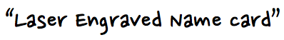
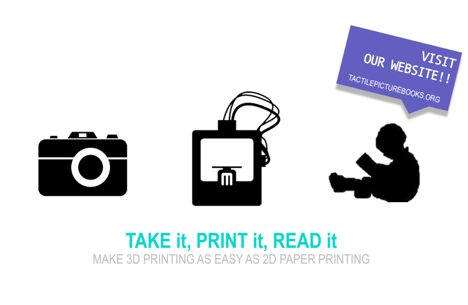
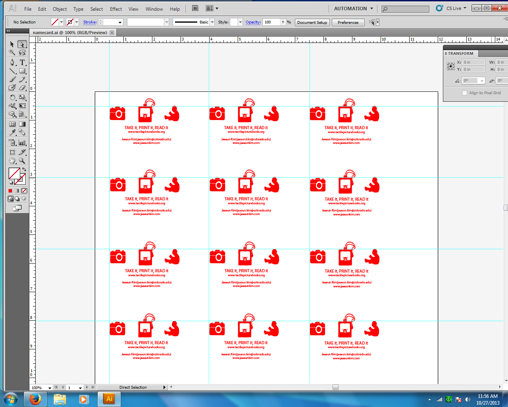
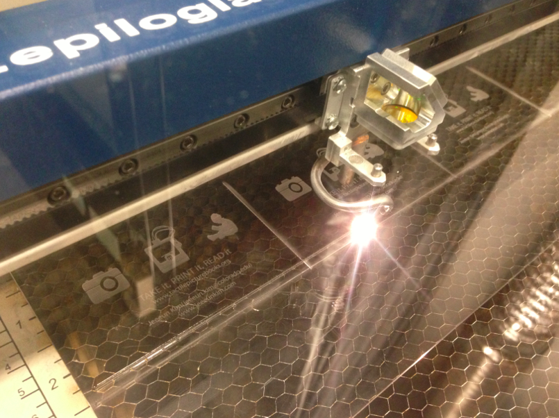
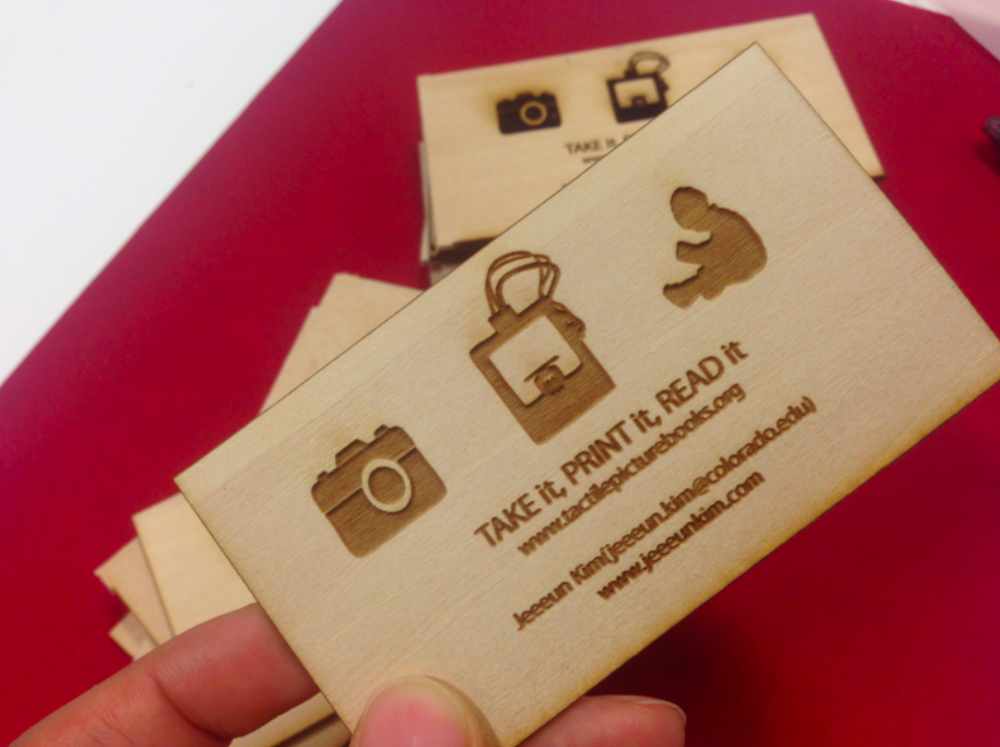
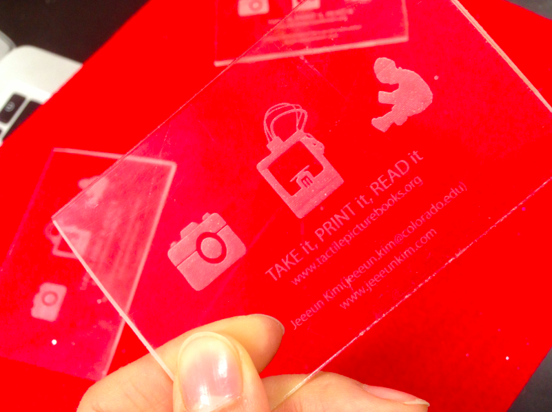
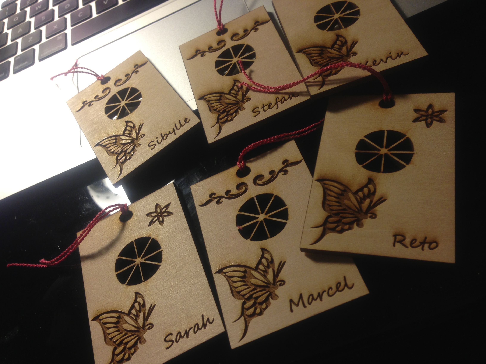

|  | |
|
I came up with ideas to create unique namecard, preparing my first poster presentation ever at the Grace Hopper Celebration 2013. Since I did neither want my namecard to be boring nor hackneyed, thought the way to advertise my experiments on the "Printing Tactile Picture Books for the Blind Children" project, and created two different versions of name card from the lightening talk teaser poster design I made.
Live Tracing Poster  I imported the poster image into the Adobe Illustrator, discard all colors, and expand silhouettes using live tracing, in order to recognize areas to be raterized. Also inserted proper texts - simple vision statement, project site address, and my contact. Resizing and Duplicating  Each piece is scaled down to 3*4 inches, to fit general name card size. After duplicating, name cards are iteratively rater engraved and vetoer cut with raser cutter. The time consumed are different based on the settings, usually it took 25ish minute to make 9 pieces at once. Imagine, I printed 27 pieces, after looking at the laser cutter all the time attended! Engraving  I used two different materials, Acrylic and Basswood, using different settings of speed, DPI, and power of Laser. Even though transparent acrylic looks beautiful, it is a bit heavier than the wooden version and also has sharp edges. Therefore, having more wood made biz cards seemed to be a better option to bring to the Conference, for my heavy-enough baggage. Bizcard   Finally, I have it! Tip!  This is another tries to create an art with laser cutter, for souvenirs for my POLE project fellows. I designed Korean traditional hype shape using Adobe illustrator, engraved traditional patterns with their names to be unique. |